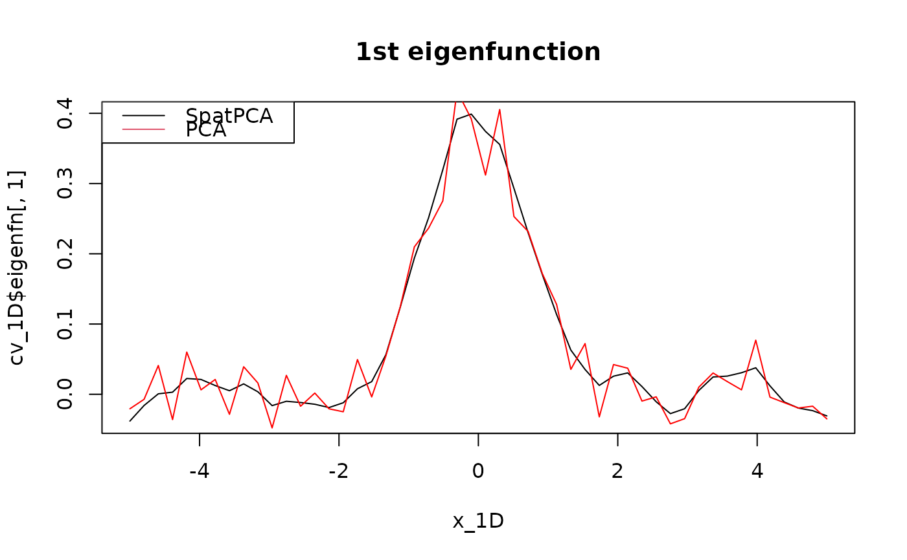

Produce spatial dominant patterns and spatial predictions at the designated locations according to the specified tuning parameters or the selected tuning parameters by the M-fold cross-validation.
Arguments
- x
Location matrix (\(p \times d\)). Each row is a location. \(d\) is the dimension of locations
- Y
Data matrix (\(n \times p\)) stores the values at \(p\) locations with sample size \(n\).
- M
Optional number of folds for cross validation; default is 5.
- K
Optional user-supplied number of eigenfunctions; default is NULL. If K is NULL or is_K_selected is TRUE, K is selected automatically.
- is_K_selected
If TRUE, K is selected automatically; otherwise, is_K_selected is set to be user-supplied K. Default depends on user-supplied K.
- tau1
Optional user-supplied numeric vector of a nonnegative smoothness parameter sequence. If NULL, 10 tau1 values in a range are used.
- tau2
Optional user-supplied numeric vector of a nonnegative sparseness parameter sequence. If NULL, none of tau2 is used.
- gamma
Optional user-supplied numeric vector of a nonnegative tuning parameter sequence. If NULL, 10 values in a range are used.
- is_Y_detrended
If TRUE, center the columns of Y. Default is FALSE.
- maxit
Maximum number of iterations. Default value is 100.
- thr
Threshold for convergence. Default value is \(10^{-4}\).
- num_cores
Number of cores used to parallel computing. Default value is NULL (See
RcppParallel::defaultNumThreads())
Value
A list of objects including
- eigenfn
Estimated eigenfunctions at the new locations, x_new.
- selected_K
Selected K based on CV. Execute the algorithm when
is_K_selectedisTRUE.- selected_tau1
Selected tau1.
- selected_tau2
Selected tau2.
- selected_gamma
Selected gamma.
- cv_score_tau1
cv scores for tau1.
- cv_score_tau2
cv scores for tau2.
- cv_score_gamma
cv scores for gamma.
- tau1
Sequence of tau1-values used in the process.
- tau2
Sequence of tau2-values used in the process.
- gamma
Sequence of gamma-values used in the process.
- detrended_Y
If is_Y_detrended is TRUE, detrended_Y means Y is detrended; else, detrended_Y is equal to Y.
- scaled_x
Input location matrix. Only scale when it is one-dimensional
Details
An ADMM form of the proposed objective function is written as $$\min_{\mathbf{\Phi}} \|\mathbf{Y}-\mathbf{Y}\mathbf{\Phi}\mathbf{\Phi}'\|^2_F +\tau_1\mbox{tr}(\mathbf{\Phi}^T\mathbf{\Omega}\mathbf{\Phi})+\tau_2\sum_{k=1}^K\sum_{j=1}^p |\phi_{jk}|,$$ \(\mbox{subject to $ \mathbf{\Phi}^T\mathbf{\Phi}=\mathbf{I}_K$,}\) where \(\mathbf{Y}\) is a data matrix, \({\mathbf{\Omega}}\) is a smoothness matrix, and \(\mathbf{\Phi}=\{\phi_{jk}\}\).
References
Wang, W.-T. and Huang, H.-C. (2017). Regularized principal component analysis for spatial data. Journal of Computational and Graphical Statistics 26 14-25.
See also
Examples
# The following examples only use two threads for parallel computing.
## 1D: regular locations
x_1D <- as.matrix(seq(-5, 5, length = 50))
Phi_1D <- exp(-x_1D^2) / norm(exp(-x_1D^2), "F")
set.seed(1234)
Y_1D <- rnorm(n = 100, sd = 3) %*% t(Phi_1D) + matrix(rnorm(n = 100 * 50), 100, 50)
cv_1D <- spatpca(x = x_1D, Y = Y_1D, num_cores = 2)
plot(x_1D, cv_1D$eigenfn[, 1], type = "l", main = "1st eigenfunction")
lines(x_1D, svd(Y_1D)$v[, 1], col = "red")
legend("topleft", c("SpatPCA", "PCA"), lty = 1:1, col = 1:2)

# \donttest{
## 2D: Daily 8-hour ozone averages for sites in the Midwest (USA)
library(fields)
#> Loading required package: spam
#> Spam version 2.9-1 (2022-08-07) is loaded.
#> Type 'help( Spam)' or 'demo( spam)' for a short introduction
#> and overview of this package.
#> Help for individual functions is also obtained by adding the
#> suffix '.spam' to the function name, e.g. 'help( chol.spam)'.
#>
#> Attaching package: ‘spam’
#> The following objects are masked from ‘package:base’:
#>
#> backsolve, forwardsolve
#> Loading required package: viridis
#> Loading required package: viridisLite
#>
#> Try help(fields) to get started.
library(pracma)
#>
#> Attaching package: ‘pracma’
#> The following object is masked from ‘package:SpatPCA’:
#>
#> detrend
library(maps)
#>
#> Attaching package: ‘maps’
#> The following object is masked from ‘package:viridis’:
#>
#> unemp
data(ozone2)
x <- ozone2$lon.lat
Y <- ozone2$y
date <- as.Date(ozone2$date, format = "%y%m%d")
rmna <- !colSums(is.na(Y))
YY <- matrix(Y[, rmna], nrow = nrow(Y))
YY <- detrend(YY, "linear")
xx <- x[rmna, ]
cv <- spatpca(x = xx, Y = YY)
quilt.plot(xx, cv$eigenfn[, 1])
map("state", xlim = range(xx[, 1]), ylim = range(xx[, 2]), add = TRUE)
map.text("state", xlim = range(xx[, 1]), ylim = range(xx[, 2]), cex = 2, add = TRUE)
#> Error in map(database = "state", xlim = range(xx[, 1]), ylim = range(xx[, 2]), fill = TRUE, plot = FALSE, regions = ".", exact = FALSE, resolution = 0): object 'xx' not found
plot(date, YY %*% cv$eigenfn[, 1], type = "l", ylab = "1st Principal Component")
 ### new loactions
new_p <- 200
x_lon <- seq(min(xx[, 1]), max(xx[, 1]), length = new_p)
x_lat <- seq(min(xx[, 2]), max(xx[, 2]), length = new_p)
xx_new <- as.matrix(expand.grid(x = x_lon, y = x_lat))
eof <- spatpca(x = xx,
Y = YY,
K = cv$selected_K,
tau1 = cv$selected_tau1,
tau2 = cv$selected_tau2)
predicted_eof <- predictEigenfunction(eof, xx_new)
quilt.plot(xx_new,
predicted_eof[,1],
nx = new_p,
ny = new_p,
xlab = "lon.",
ylab = "lat.")
map("state", xlim = range(x_lon), ylim = range(x_lat), add = TRUE)
map.text("state", xlim = range(x_lon), ylim = range(x_lat), cex = 2, add = TRUE)
#> Error in map(database = "state", xlim = range(x_lon), ylim = range(x_lat), fill = TRUE, plot = FALSE, regions = ".", exact = FALSE, resolution = 0): object 'x_lon' not found
## 3D: regular locations
p <- 10
x <- y <- z <- as.matrix(seq(-5, 5, length = p))
d <- expand.grid(x, y, z)
Phi_3D <- rowSums(exp(-d^2)) / norm(as.matrix(rowSums(exp(-d^2))), "F")
Y_3D <- rnorm(n = 100, sd = 3) %*% t(Phi_3D) + matrix(rnorm(n = 100 * p^3), 100, p^3)
cv_3D <- spatpca(x = d, Y = Y_3D, tau2 = seq(0, 1000, length = 10))
library(plot3D)
#> Warning: no DISPLAY variable so Tk is not available
library(RColorBrewer)
cols <- colorRampPalette(brewer.pal(9, "Blues"))(p)
isosurf3D(x, y, z,
colvar = array(cv_3D$eigenfn[, 1], c(p, p, p)),
level= seq(min(cv_3D$eigenfn[, 1]), max(cv_3D$eigenfn[, 1]), length = p),
ticktype = "detailed",
colkey = list(side = 1),
col = cols)
### new loactions
new_p <- 200
x_lon <- seq(min(xx[, 1]), max(xx[, 1]), length = new_p)
x_lat <- seq(min(xx[, 2]), max(xx[, 2]), length = new_p)
xx_new <- as.matrix(expand.grid(x = x_lon, y = x_lat))
eof <- spatpca(x = xx,
Y = YY,
K = cv$selected_K,
tau1 = cv$selected_tau1,
tau2 = cv$selected_tau2)
predicted_eof <- predictEigenfunction(eof, xx_new)
quilt.plot(xx_new,
predicted_eof[,1],
nx = new_p,
ny = new_p,
xlab = "lon.",
ylab = "lat.")
map("state", xlim = range(x_lon), ylim = range(x_lat), add = TRUE)
map.text("state", xlim = range(x_lon), ylim = range(x_lat), cex = 2, add = TRUE)
#> Error in map(database = "state", xlim = range(x_lon), ylim = range(x_lat), fill = TRUE, plot = FALSE, regions = ".", exact = FALSE, resolution = 0): object 'x_lon' not found
## 3D: regular locations
p <- 10
x <- y <- z <- as.matrix(seq(-5, 5, length = p))
d <- expand.grid(x, y, z)
Phi_3D <- rowSums(exp(-d^2)) / norm(as.matrix(rowSums(exp(-d^2))), "F")
Y_3D <- rnorm(n = 100, sd = 3) %*% t(Phi_3D) + matrix(rnorm(n = 100 * p^3), 100, p^3)
cv_3D <- spatpca(x = d, Y = Y_3D, tau2 = seq(0, 1000, length = 10))
library(plot3D)
#> Warning: no DISPLAY variable so Tk is not available
library(RColorBrewer)
cols <- colorRampPalette(brewer.pal(9, "Blues"))(p)
isosurf3D(x, y, z,
colvar = array(cv_3D$eigenfn[, 1], c(p, p, p)),
level= seq(min(cv_3D$eigenfn[, 1]), max(cv_3D$eigenfn[, 1]), length = p),
ticktype = "detailed",
colkey = list(side = 1),
col = cols)
 # }
# }